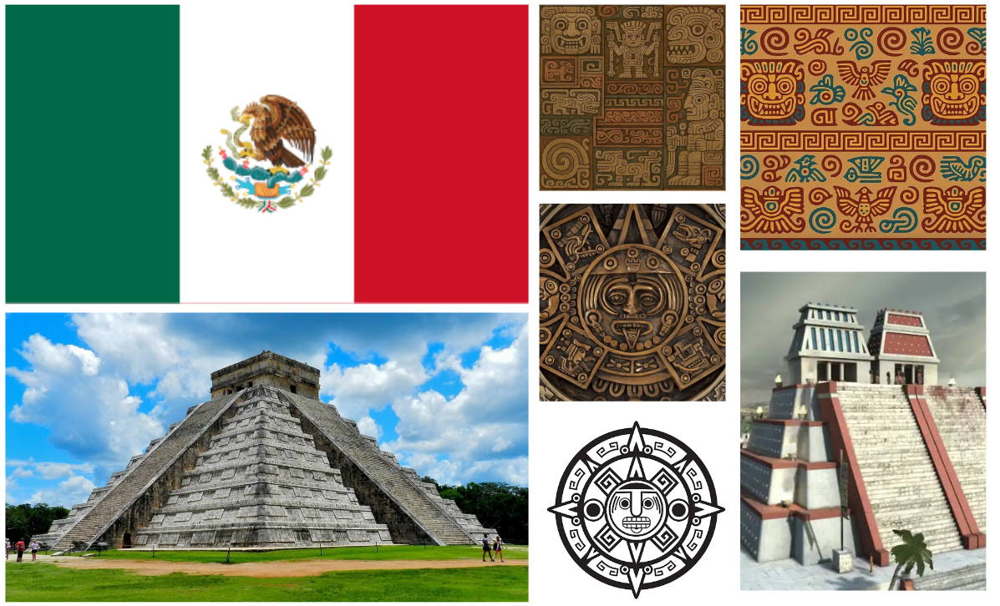

APRESENTAÇÃO
O trabalho escolhido se trata de um Redesign de Bandeira, da disciplina Ateliê de Design I, onde o objetivo era com que os grupos escolhessem algum país que fosse participar da Copa do Mundo de 2026 para fazer um redesign da sua bandeira.

INSPIRAÇÃO
Nosso grupo optou por fazer o redesign da bandeira do México. Utilizamos de elementos da cultura asteca para o desenvolvimento da mesma, a pirâmide branca central faz referência aos monumentos antigos e os cinco círculos amarelos estão sobre a pirâmide representando a lenda asteca dos cinco sóis (brevemente, a lenda fala sobre os ciclos de criação e destruição do universo, de acordo com a mesma, já se passaram quatro desses ciclos e estamos atualmente vivenciando o quinto). Mantemos as mesmas cores da bandeira mexicana atual, com exceção do amarelo, com intuito de preservar a identidade e significados da mesma.

UNIÃO DAS FORMAS
Como exemplificado por Wong, em Princípios de forma e desenho, as formas podem resultar em diferentes relações quando interagem umas com as outras. Uma dessas relações que pode ser estabelecida é a união, trata-se da sobreposição de duas formas, que resulta em uma forma maior sem contorno ou distinção de qual está posicionada acima ou abaixo.
Este método foi utilizado para a construção da representação da pirâmide em nossa bandeira, onde um triângulo foi unido com um retângulo para a criação da mesma:

EQUILÍBRIO FORMAL | SIMETRIA
O equilíbrio formal trata-se de uma forma de composição que se baseia na simetria, ou seja, se ao se partir uma imagem ao meio em sentido vertical, as partes parecerem espelhadas, então a imagem possuí um equilíbrio formal.
Ao partir nossa bandeira ao meio, verticalmente, obtemos duas metades espelhadas, fazendo com que a bandeira seja simétrica:

SÍMBOLO
Os símbolos são uma vertente da classificação de signos, onde os signos são organizados de acordo com a relação com o objeto. A representação de algo por convenção ou lei é o que classifica um signo como símbolo, ou seja, é quando algo representa alguma coisa.
A pirâmide e os sóis são signos da relação triádica da semiótica, porém eles também fazem parte da lei de terceiridade, já que são símbolos de algo que constituímos.
DECLARAÇÃO DE (NÃO) USO DE IA
Declaramos que não utilizamos, em nenhuma etapa do desenvolvimento do presente trabalho, ferramentas de Inteligência Artificial, incluindo mas não se limitando a recursos de geração de texto, imagem, código, resumos, traduções ou análises.
REFERÊNCIAS BIBLIOGRÁFICAS
WONG, Wucius. Princípios de forma e desenho.2. ed. São Paulo : WMF Martins Fontes, 2010. 352 p, il.
SANTAELLA, Lucia. Introdução à semiótica: passo a passo para compreender os signos e a significação / Winfried
Nöth, Lucia Santaella. — São Paulo: Paulus, 2017. — Coleção Introduções.
LIDWELL, William; HOLDEN, Kritina; BUTLER, Jill. Princípios universais do design: 125 maneiras de aprimorar a usabilidade, influenciar a percepção, aumentar o apelo e ensinar por meio do design. Tradução de Leneide Duarte. Porto Alegre: Bookman, 2010. 272p.